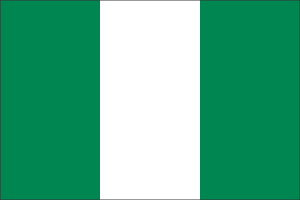

Prosper Anosike
About Me
My name is Prosper, and I'm passionate about technology, design, and continuous learning. I enjoy creating meaningful digital experiences and exploring new cultures. Currently studying web development fundamentals, I'm excited to build innovative solutions that make a positive impact.

Lagos, Nigeria
Lagos is one of Africa's most vibrant cities filled with energy, creativity, and diversity. Known as the commercial capital of Nigeria, it's home to over 15 million people and serves as a major hub for technology, finance, and entertainment in West Africa. The city is renowned for its rich cultural heritage, bustling markets, and innovative spirit.
Official Flag of Nigeria